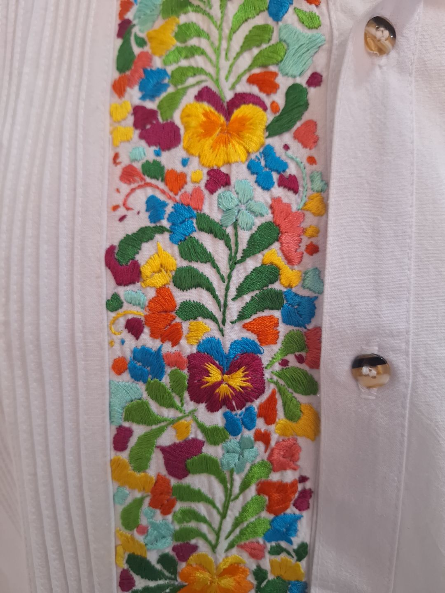
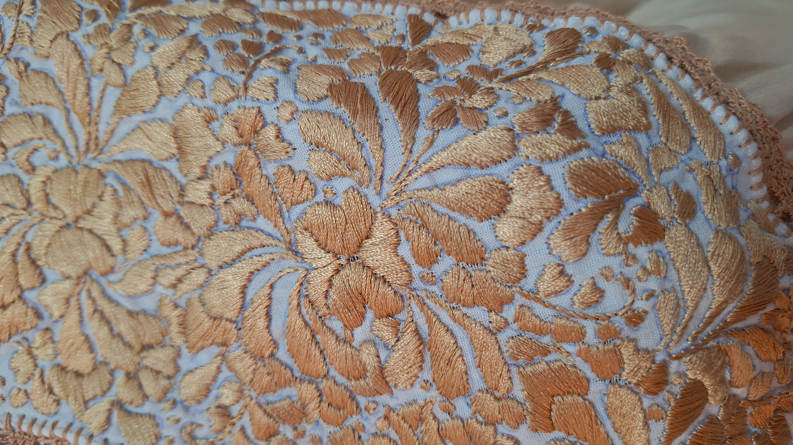
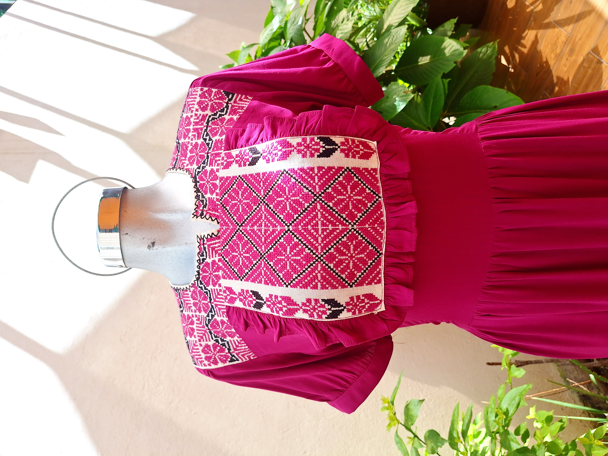

Nuestra Historia
Más de un año preservando y celebrando la tradición textil oaxaqueña.
El Arte que Nos Define
Boutique Victoria nació del deseo de compartir la riqueza del textil oaxaqueño con el mundo moderno. Aunque somos un taller joven, trabajamos con maestras artesanas cuya experiencia hereda siglos de conocimiento.
Cada puntada en nuestras piezas de bordado y cada hilo en nuestros tejidos cuenta una historia de identidad y resistencia cultural.


Nuestro Proceso Artesanal
Cada prenda es un testimonio de maestría, donde la tradición y la calidad se entrelazan en cada paso.

Selección de Hilos
Utilizamos fibras de algodón natural y brillantes hilos de seda para dar vida a los detalles más sofisticados y duraderos de nuestras prendas.

Telas y Fibras
Trabajamos desde la emblemática manta tradicional hasta fibras contemporáneas como el lino, logrando un equilibrio perfecto entre frescura y elegancia moderna.

Confección en Taller
Nos encargamos directamente del diseño y armado de cada pieza, asegurando un talle impecable y el respeto total a la integridad del bordado artesanal.
Nuestras Técnicas más Populares
Bordado a Mano
Inspirados en la técnica de San Antonino Castillo Velasco, cada puntada es un tributo a la flora de nuestra región. Nuestras piezas más características están plasmadas con grandes Pensamientos multicolores.

El Arte del Deshilado
Dominamos una gran variedad de técnicas de deshilado transmitidas por generaciones. En este proceso, se extraen hilos de la trama original para crear calados elegantes que transforman la tela en una fina pieza de encaje.

Punto de Cruz Ejuteco
Trabajamos la técnica de Punto de Cruz originaria de Ejutla de Crespo. Combinamos figuras geométricas con diseños florales en hilo de algodón sobre lienzos de manta que narran nuestra identidad.
